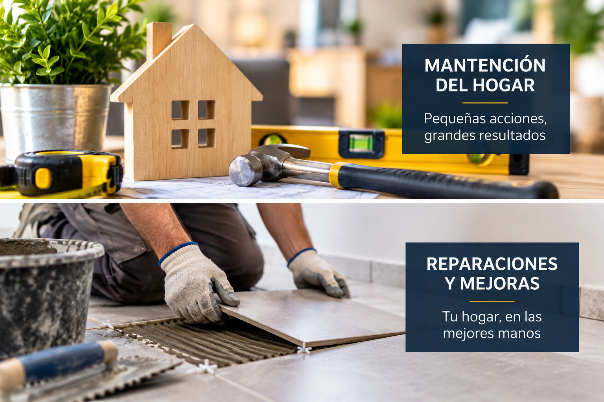

¿Cuándo es necesario realizar una mantención?

La mantención de una vivienda permite detectar y solucionar problemas antes de que puedan transformarse en reparaciones más grandes.
Filtraciones de agua
Si aparecen manchas de humedad en muros o techos, es importante revisar el origen del problema. Una filtración que no se soluciona a tiempo puede provocar daños en revestimientos y otras partes de la vivienda.
Problemas en muros y revestimientos
Grietas, desprendimientos o deterioro de revestimientos son señales de que puede ser necesario realizar una reparación o mantención. Detectar estos problemas oportunamente ayuda a evitar que aumenten.
Puertas y ventanas
Las puertas y ventanas también requieren revisiones periódicas. Dificultades para abrir o cerrar, filtraciones de aire o deterioro de sus materiales pueden indicar que necesitan reparación o ajuste.
La importancia de la prevención
Realizar mantenciones de manera preventiva permite conservar los espacios de la vivienda, mejorar su funcionamiento y evitar que pequeños desperfectos se conviertan en problemas mayores.
En Construcciones Montero podemos ayudarte con diferentes trabajos de reparación, mantención y mejoramiento del hogar.